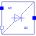

DiodeCenterTap2PulseTwo pulse diode rectifier with center tap |

|
Diagram
{kind=link}
Information
This information is part of the Modelica Standard Library maintained by the Modelica Association.
General information about AC/DC converters can be found at the AC/DC converter concept
This is a two pulse diode rectifier with center tap. In order to operate this rectifier a voltage with center tap is required. The center tap has to be connected with the negative pin of the load. The circuit topology is the same as in Examples.ACDC.RectifierCenterTap2Pulse.
Parameters (5)
| useHeatPort |
Value: false Type: Boolean Description: = true, if heatPort is enabled |
|---|---|
| T |
Value: 293.15 Type: Temperature (K) Description: Fixed device temperature if useHeatPort = false |
| RonDiode |
Value: 1e-05 Type: Resistance (Ω) Description: Closed diode resistance |
| GoffDiode |
Value: 1e-05 Type: Conductance (S) Description: Opened diode conductance |
| VkneeDiode |
Value: 0 Type: Voltage (V) Description: Diode forward threshold voltage |
Connectors (4)
| ac_p |
Type: PositivePin Description: Positive AC input |
|
|---|---|---|
| ac_n |
Type: NegativePin Description: Negative AC input |
|
| dc_p |
Type: PositivePin Description: Positive DC output |
|
| heatPort |
Type: HeatPort_a Description: Conditional heat port |
Components (2)
| diode_p |
Type: IdealDiode Description: Diodes conducting positive pin AC potentials |
|
|---|---|---|
| diode_n |
Type: IdealDiode Description: Diodes conducting negative pin AC potentials |
Used in Examples (1)
|
Modelica.Electrical.PowerConverters.Examples.ACDC.RectifierCenterTap2Pulse Two pulse diode rectifier with center tap with resistive load |